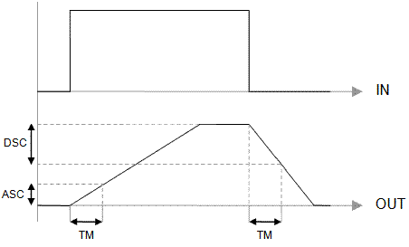
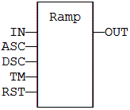
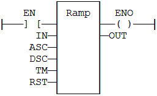

Function Block
Limit the ascendance or descendance of a signal.
|
Name |
Type |
Description |
|
IN |
REAL |
Input signal. |
|
ASC |
REAL |
Maximum ascendance during time base. |
|
DSC |
REAL |
Maximum descendance during time base. |
|
TM |
TIME |
Time base. |
|
RST |
BOOL |
Reset. |
|
Name |
Type |
Description |
|
OUT |
REAL |
Ramp signal. |

Parameters are not updated constantly. They are taken into account when only:
„ The first time the block is called.
„ When the reset input (RST) is TRUE.
In these two situations, the output is set to the value of IN input.
ASC and DSC give the maximum ascendant and descendant growth
during the TB time base.
Both must be expressed as
positive numbers.
In LD language, the operation is executed only if the input rung (EN) is TRUE. The output rung (ENO) keeps the same value as the input rung.
MyRamp is a declared instance of RAMP function block.
MyRamp (IN, ASC, DSC, TM, RST);
OUT := MyRamp.OUT;

The function is executed only if EN is TRUE.
ENO keeps the same value as EN.

MyRamp is a declared instance of RAMP function block.
Op1: CAL MyRamp (IN, ASC, DSC, TM, RST)
LD MyBlinker.OUT
ST OUT